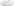
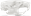
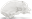
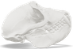
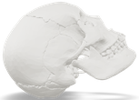
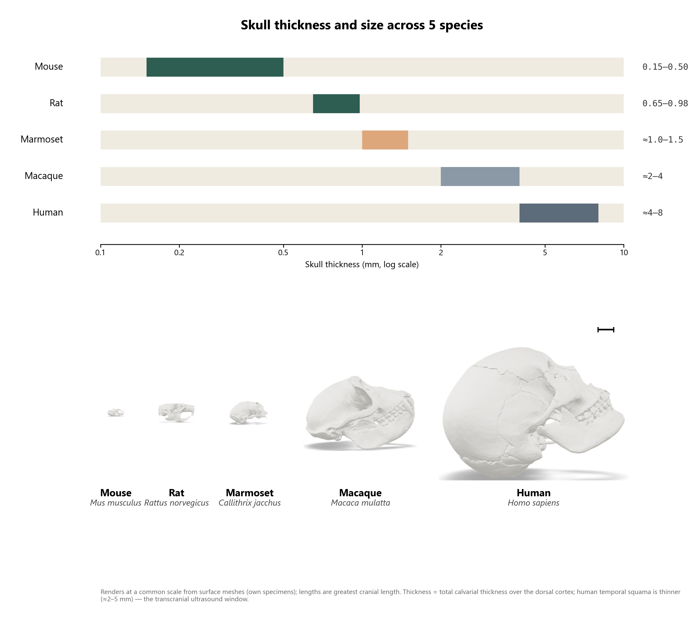

Mouse21 mm
Mouse to human, rendered from the same five surface meshes at one shared scale — a working atlas of cranial size and calvarial thickness across the model species used in neuroscience research. Every specimen below is a live 3D model — drag to rotate, scroll to zoom.





Top: published range of total calvarial (skull-cap) thickness per species. Bottom: lateral renders of the five specimens at one common scale, from mouse to human.

Renders generated from the specimens' own surface meshes at a shared scale. Thickness ranges are total calvarial thickness over the dorsal cortex, drawn from the comparative-anatomy literature; the human temporal squama is a notable exception at ≈2–5 mm, the thin-bone window used for transcranial ultrasound.
Each model below is the specimen's actual 3D mesh, decimated for the web. Measurements are taken directly from the mesh, not textbook averages — individual skulls vary.
The standard laboratory rodent. Its calvaria is thin enough that many optical and ultrasound techniques work through intact bone, or through bone merely thinned rather than removed.
Larger than the mouse by skull length alone, with a calvaria roughly twice as thick — already enough of a jump to change which through-bone methods still work.
A small New World monkey and a fast-growing model for primate neuroscience, valued partly because its skull stays thin enough for some through-bone methods that fail in larger primates.
The classic laboratory primate. Its temporal bone is thick enough that most functional-imaging and neuromodulation work still needs a craniotomy or a surgically thinned window.
Thickest calvaria of the five: two dense outer tables around a spongy diploë. The temporal squama, at roughly 2–5 mm, is the one patch thin enough for transcranial ultrasound — its “acoustic window.”
Each specimen is a 3D surface mesh (STL/GLB) oriented to a true lateral view automatically: its mediolateral mirror-symmetry axis is detected first, then the model is leveled within the perpendicular plane so the ventral tooth-row/palate line runs horizontal — a stand-in for the anatomist's convention of orienting the occlusal plane level. The static Plate 1 renders are lit and shaded identically in parallel projection, so no specimen is foreshortened relative to another. The models below are the same oriented meshes, simplified to under 80,000 faces each for smooth in-browser rotation.
The "true scale" plate shares one field of view (mm) across all five renders. Lengths are each specimen's greatest cranial length along its own long axis, measured directly from the mesh — these are single specimens, not species averages, and will sit inside (or occasionally outside) the ranges reported in the literature.
| Specimen | Format | Note |
|---|---|---|
| Mouse Mus musculus | STL | Whole-skull surface scan |
| Rat Rattus norvegicus | STL | Whole-skull surface scan |
| Marmoset Callithrix jacchus | STL | Whole-skull surface scan |
| Macaque Macaca mulatta | GLB | 23-part mesh, merged for rendering |
| Human Homo sapiens | GLB | 25 labeled cranial bones, merged; ×10 unit correction applied |
The human mesh ships in centimeter-scale units in its source file; a ×10 correction was applied to bring it to millimeters and rough agreement with adult cranial dimensions. Calvarial-thickness ranges (the Plate 1 bars) are literature figures for each species, independent of these meshes.